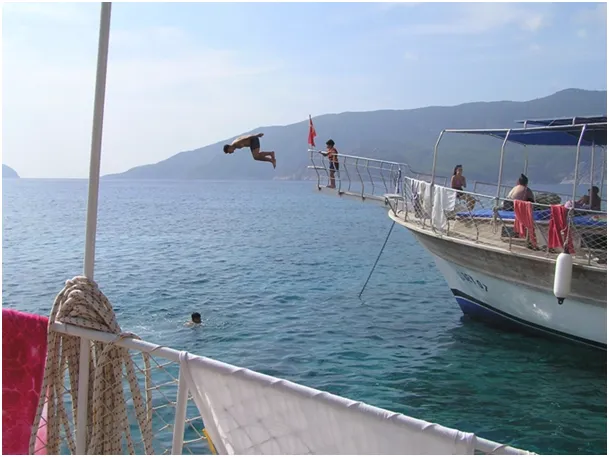
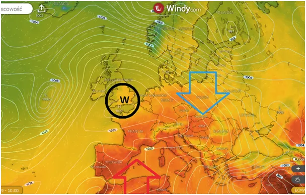
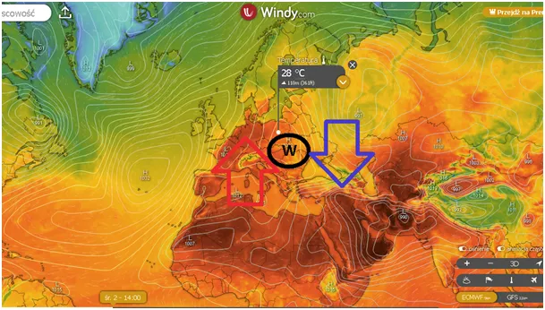
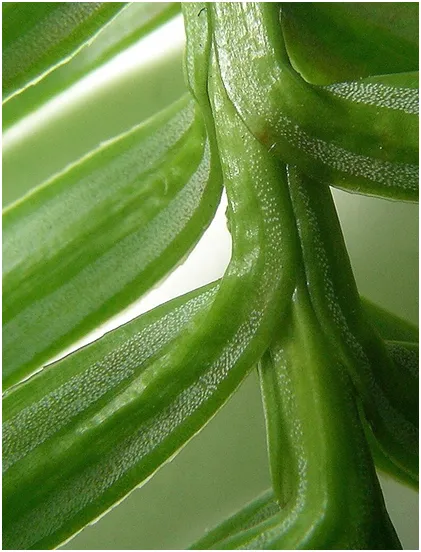
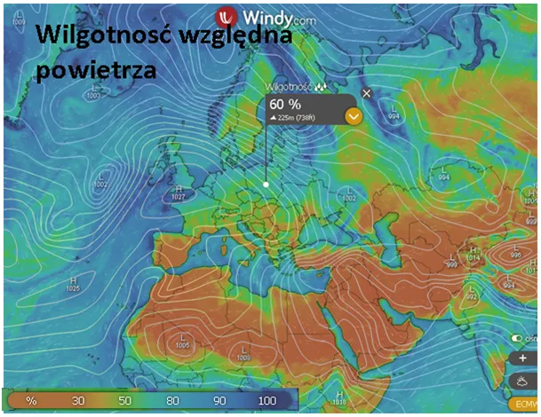

Dlaczego w Polsce jest duszno, a w Turcji nie?
Wirujący w prawo wyż, który obecnie jest na lewo od Polski ściąga wilgotne, atlantyckie powietrze (mapka 2). Za kilka dni przesunie się na prawo i zaciągnie ciepło z południa. W połączeniu z bezchmurnym niebem daje to efekt duszności mimo niewysokiej temperatury. Wynika to z kilku czynników. Najmniejszym jest spadek zawartości tlenu w powietrzu. Liczba cząstek mieszaniny gazów w danej objętości jest stała przy tej samej temperaturze i ciśnieniu, gdy mamy w powietrzu więcej pary wodnej tym innych gazów jest mniej, w tym tlenu, ale to zmiana mała. Wilgotne, ciepłe powietrze utrudnia parowanie potu, który jest silnym czynnikiem chłodzącym. Zamiana cieczy w gaz pochłania dużo energii cieplnej, jest to tzw. ciepło przejścia fazowego.


Energia cieplna parującego podłoża jest wykorzystana na rozerwanie wiązań atomowych cieczy. Zmienia wodę w parę, ciecz w gaz, nie podnosząc przy tym temperatury cząstek. Czyli, gdy ciecz paruje chłodzi podłoże a nie nagrzewa atmosfery. Dlatego pod dużym drzewem, czy w gęstym lesie jest chłodno, to jest dosłownie to samo zjawisko, którym chłodzimy nasze jedzenie w lodówkach.
Gdy jest ciepło i wilgotno wydajność naszego, ludzkiego "agregatu chłodniczego" spada i krew zaczyna szybciej krążyć, serce przyspiesza itd. Dlatego warto najbliższe dni spędzać w starym, gęstym lesie, tam nasze serce wyręczą miliardy aparatów szparkowych w liściach drzew. W każdym liściu jest mnóstwo takich aparatów, przez które woda rośliny wyparowuje do atmosfery oddając swą energię otoczeniu. Chłodna woda z korzeni pompowana do liści jest chłodnicą świata, dlatego tak ważne są drzewa w naszym otoczeniu.

W naszym regionie latem mamy dużo wilgoci z Atlantyku. Na południu, np. W Turcji, czy Hiszpanii powietrze jest znacznie suchsze, bo wysuszone nad Afryką i Półwyspem Arabskim, różnice sięgają 30-40 % wilgotności i mimo wyższej temperatury latem czujemy się tam znacznie lepiej, wystarczy usiąść w cieniu, by komfortowo podziwiać piękne krajobrazy.

Tutaj moje inne teksty o wodzie i jej cudownym znaczeniu. https://pawelklimczewski.pl/page/2/?s=woda
Paweł Klimczewski